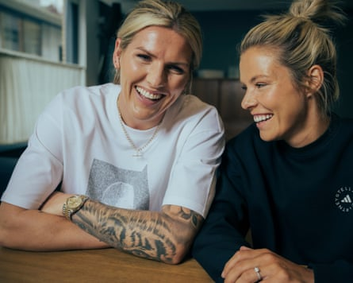

FOOTBALL. NEVER. STOPS
Football Daily would prefer not to have to think about Copa Gianni at all but we have a certain professional obligation to do so and have never knowingly been found shirking in the face of our responsibilities. To keep things simple, we prefer to view the tournament as a stand-alone competition that’s taking place between the end of the last season and the beginning of the next one, but the fact that it’s being contested by clubs instead of countries leaves plenty of room for debate. Watching Kingsley Coman “sprint” on to a through-ball from Harry Kane during Bayern Munich’s defeat by PSG as if he was running in knee-deep wet cement, we were presented with the sight of a player in next season’s kit who was quite clearly exhausted by the exertions of the one that may or may not have ended before the tournament in which he was playing started. Does the goal he didn’t score go down in the official xG column of last season, next season, or neither?
If as seems likely, Copa Gianni goes down in the official record books as part of last season, then it will overlap with European football’s next season, which officially starts … on Tuesday! Designed in part by Fifa to disrupt and devalue the gleaming jewel in Uefa’s crown, it will go down as a matter of historical record that last season’s Copa Gianni will conclude at the end of the same week next season’s Bigger Cup began. Over the next two days no fewer than 28 teams will line up to play in Bigger Cup qualifiers, with The New Saints, Shelbourne and Linfield representing Wales, the Republic of Ireland and Northern Ireland respectively. And while it would be little short of a miracle for any of the three sides to make it to Bigger Cup proper, at least one of Shels and Linfield will make it into the next qualifying round because they’ve been paired against each other.
Until very recently managed by Damien Duff, who won the League of Ireland Premier Division with them last season before resigning a couple of weeks ago following a typically forthright but extremely coruscating public take-down of his players, Shels will be managed by Duff’s former assistant turned replacement, Joey O’Brien. “He made his call and then it was up to me to make my call and I did,” said the former Bolton Wanderer of his decision to take over from his pal. “Hopefully we can write new memories again. With the players, we have a great squad. Great lads. That’s why I wanted to hang around.” While fans of both Shels and Linfield had almost certainly hoped for a more exotic Bigger Cup away trip than a two-hour coach trip up and down the M1 to Belfast or Dublin respectively, the good news is that the winners can look forward to an away day in Baku, Azerbaijan. Qarabag await the victors and are a team the Northern Irish side and their manager, David Healy, have faced before in what is now known as Bigger Vase.
Meanwhile in Wales, they’ll be dancing on the streets of The New Saints if the famous side formerly known as Total Network Solutions can see off North Macedonia’s Shkendija to tee up what looks certain to be a second qualifying round tie against FCSB, the even more famous side formerly known as Steaua Bucharest. While TNS are well aware Shkendija is a tough place to go having lost there 5-0 seven years ago, their manager Craig Harrison is hopeful they can exact some revenge. “It’s going to be a really tough game out there,” blathered the former Middlesbrough defender. “It’s going to be really hot and humid and it will be like it was in Montenegro against Decic.” Decic, of course, being the team TNS beat at this stage of Bigger Cup at the start of last season. Unless, of course, it was the end of the season before.
LIVE ON BIG WEBSITE
Join Sarah Rendell for Euro 2025 updates on Spain 4-0 Belgium at 5pm (BST), while Will Unwin will be on hand at 8pm for Portugal 1-1 Italy.
QUOTE OF THE DAY
There’s me being able to walk down the stairs after I’ve played 90 minutes of football, there’s me in the future when I have children being able to walk around properly, being able to bend down and pick up toys, there’s me being able to do normal life things like put on socks without being in pain and, for the first time in a long time, I genuinely didn’t think about the response of the public because that just wasn’t a priority” – Millie Bright reveals how she is feeling better in her mind after taking the decision to miss Euro 2025 and prioritise her recovery from a knee injury.
Millie Bright (left) and Rachel Daley have recently launched a podcast together.Photograph: Garry Jones
FOOTBALL DAILY LETTERS
Sometimes Mauricio Pochettino wants it to be a penalty , sometimes he doesn’t . There’s just no pleasing some people. Extra moaning points for Poch insinuating that the officials were swayed by the pro-Mexico crowd for a game that USA USA USA were playing at home . P.S. A doff of the cap to Mexico for that uber cool black and gold kit …” – Noble Francis.
With a tip of the cap to The Usual Suspects … the greatest trick Infantino ever pulled was turning me into a Chelsea fan for two hours rooting against Infantino’s home team making the finals” – Harry Webb.
I can’t have been your only reader who paused between Friday’s tea time email and big website’s MBM coverage of the Jurassic reunion opening gig, to turn the dial of my retro digital transistors to the political satirical radio broadcast, Deadringers. I – and what I suspect to be 1,056 others – nearly choked on my fermented tofu when I heard a repeat of your dinosaur banter about the aforementioned group of monobrows. I assume the requisite phone calls were made – i.e. your people calling their people, etc – and payment made (four pack of budget Tin) before Tom Baker’s closing remarks” – Nicholas Tipple.
Please send your letters to the.boss@theguardian.com . Today’s winner of our prizeless letter o’ the day competition is … Noble Francis . Terms and conditions for our competitions, when we run them, can be viewed here .
- This is an extract from our daily football email … Football Daily. To get the full version, just visit this page and follow the instructions .